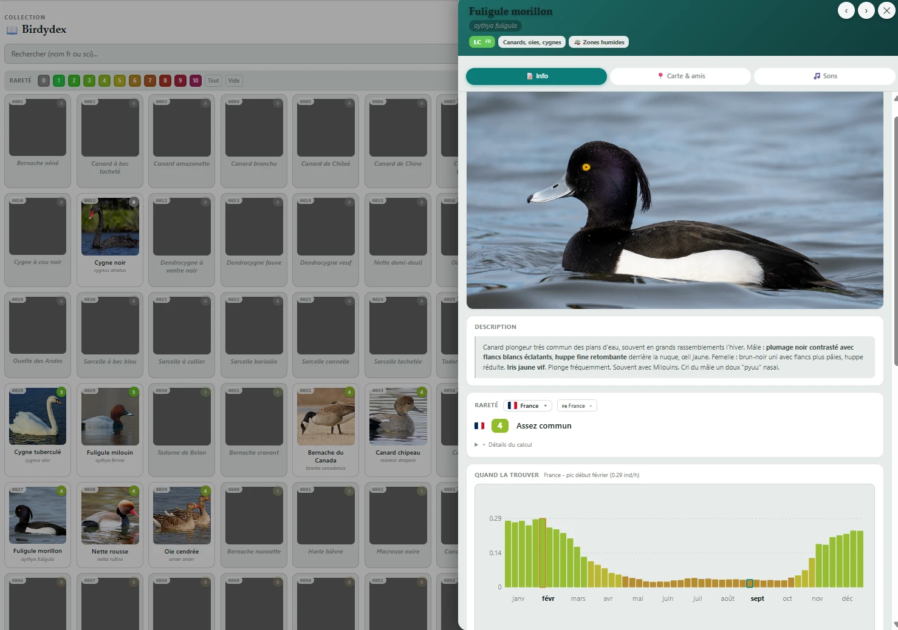
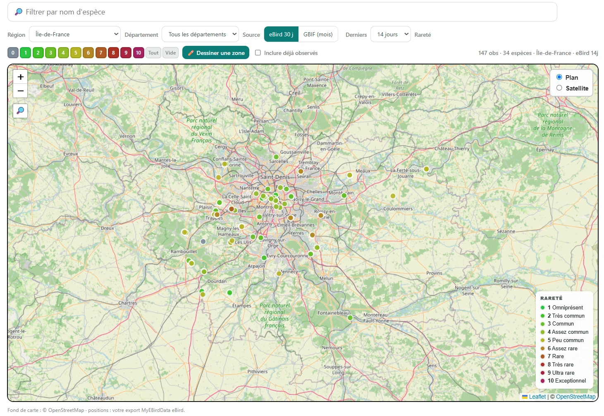
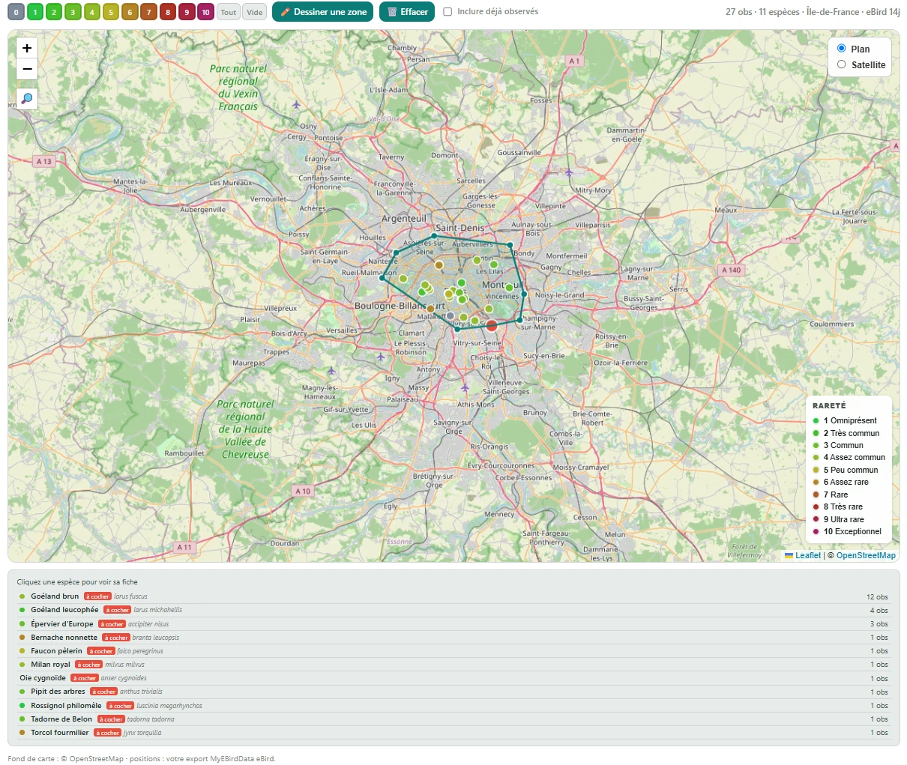
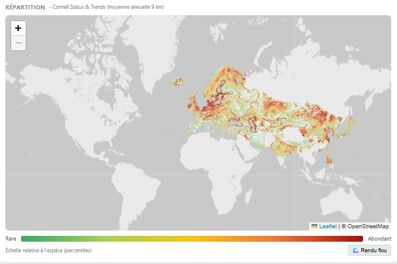
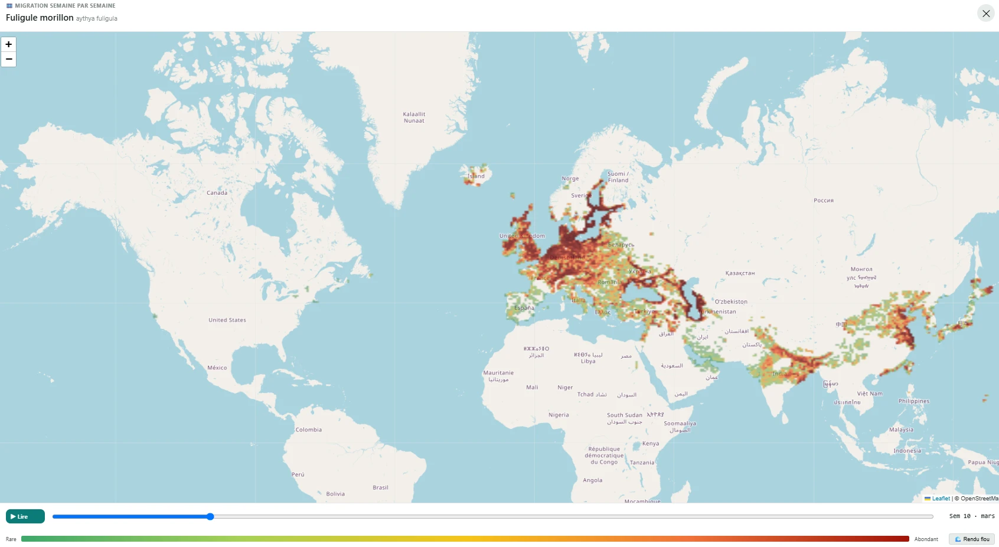

L’Ornithèque
Projet personnel · 2025-2026
Plateforme web privée pour un groupe d’amis passionnés d’ornithologie : suivre ses observations, comparer sa progression, découvrir de nouvelles espèces. Aujourd’hui, tchat, galerie photo, quiz de reconnaissance, cartes de répartition et animations de phénologie migratoire pour plus de 300 espèces.

Pleine résolution ↗

Pleine résolution ↗

Pleine résolution ↗

Pleine résolution ↗

Pleine résolution ↗
Mon rôle
Ce projet m’a permis de travailler concrètement la donnée géospatiale sur un cas grand public : intégration de couches d’observations en temps réel (eBird, GBIF), affichage de rasters de répartition mondiale à partir de Cornell Status & Trends, et animation semaine par semaine des couloirs de migration à partir des mêmes données. Côté produit, j’ai défini le périmètre, choisi les sources et piloté le développement, en m’appuyant sur un assistant IA (Claude Code) pour la partie technique, qui n’est pas mon métier.
Outils
Sources
Observations : eBird, base de données en ligne sur la répartition et l’abondance des oiseaux, Cornell Lab of Ornithology, Ithaca, New York (ebird.org) ; GBIF. Répartition et migration : Fink, D., T. Auer, A. Johnston, M. Strimas-Mackey, S. Ligocki, O. Robinson, W. Hochachka, L. Jaromczyk, C. Crowley, K. Dunham, A. Stillman, C. Davis, M. Stokowski, P. Sharma, V. Pantoja, D. Burgin, P. Crowe, M. Bell, S. Ray, I. Davies, V. Ruiz-Gutierrez, C. Wood, A. Rodewald. 2024. eBird Status and Trends, Data Version: 2023; Released: 2025. Cornell Lab of Ornithology, Ithaca, New York. doi.org/10.2173/WZTW8903, ebird.org/science/status-and-trends.
This material uses data from the eBird Status and Trends Project at the Cornell Lab of Ornithology, eBird.org. Any opinions, findings, and conclusions or recommendations expressed in this material are those of the author(s) and do not necessarily reflect the views of the Cornell Lab of Ornithology.
Envie d’en savoir plus ?
Le site réel est privé : il contient les listes d’un groupe d’amis. Une démonstration publique permet d’en manipuler toutes les fonctions, sans compte, sur des données inventées.